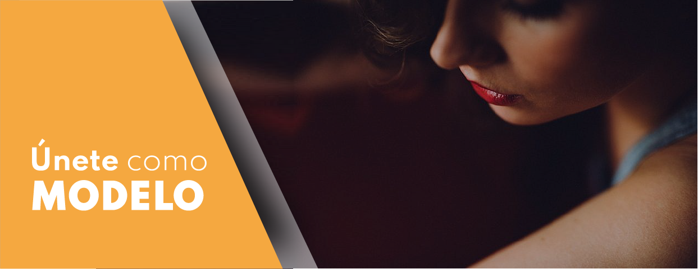

<ion-header [translucent]="true" class="FondoCabeza">
  <ion-toolbar>
    <ion-buttons slot="start">
      <ion-menu-button style="color: white;"></ion-menu-button>
    </ion-buttons>
    <!-- <ion-title>{{ folder }}</ion-title> -->
  </ion-toolbar>
</ion-header>

<ion-content [fullscreen]="true">
  <ion-list>
    <ion-item>
      
    </ion-item>
    <ion-item>
      
    </ion-item>
    <ion-item>
      
    </ion-item>
  </ion-list>
</ion-content>